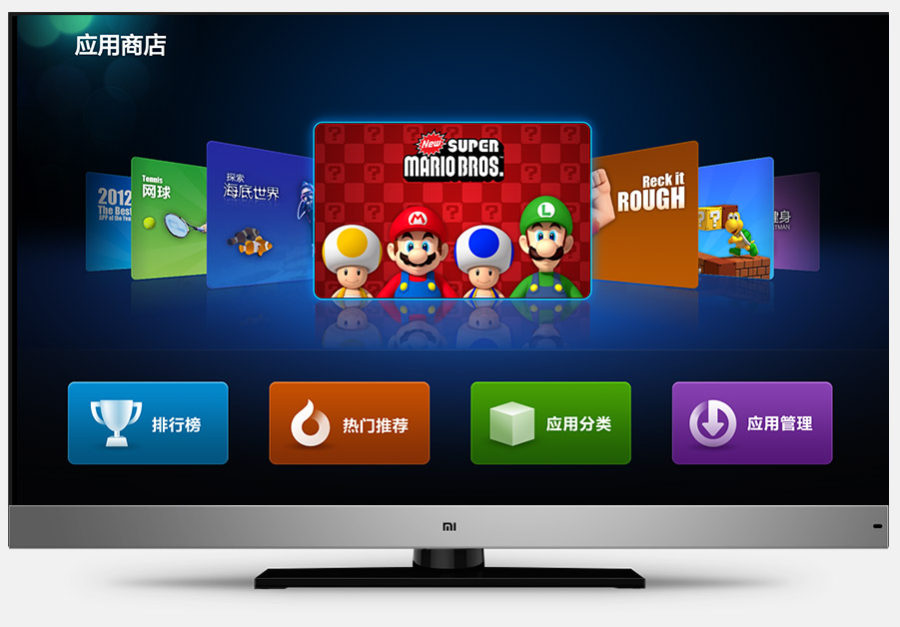

Развитие и новые рынки
Следующим этапом для компании стал анонс телевизора 5 сентября 2013 года, который получил 47-дюймовый дисплей с 3D и системой SmartTV на базе Android. Другим важным событием присоединение Хьюго Барра к Xiaomi на пост вице-президента. В прошлом он работал в Google над Android и был лицом системы на всех конференциях.
Также в сентябре представили новый флагман Xiaomi Mi3, который позволил компании еще сильнее увеличить продажи. В итоге за 2013 год они продали 18,7 миллиона устройств, но это только начало бурного роста.
В 2014 году Xiaomi начала заниматься продажей роутеров, ТВ-приставок, очистителей воздуха, портативных аккумуляторов и прочей мелкой техники и аксессуаров, параллельно с этим она расширяет линейку смартфонов до невообразимого количества, выпускает MIUI 6 и анонсирует планшет Mi Pad. В тот момент рынок планшетов начал постепенно падать, поэтому в нем спасения найти не удалось.
Настоящим бестселлером стал фитнес-браслет Mi Band. Компании удалось выпустить самый «умный» гаджет с поразительно низкой ценой и захватить только формирующийся рынок носимой электроники, уступая только уже устоявшемуся лидеру Fitbit.
Xiaomi по итогам 4 квартала 2014 года заняла пятое место среди мировых производителей смартфонов с долей рынка 4,42% и стала абсолютным лидером по поставкам в Китае с долей 13,7% (данные IDC). Заодно Xiaomi выполнила амбициозную цель — продать 60 миллионов смартфонов за 2014 год. Таких результатов компания добилась меньше чем за 4 года работы.
В 2014 году Xiaomi начала заниматься продажей роутеров, ТВ-приставок, очистителей воздуха, портативных аккумуляторов и прочей мелкой техники и аксессуаров, параллельно с этим она расширяет линейку смартфонов до невообразимого количества, выпускает MIUI 6 и анонсирует планшет Mi Pad. В тот момент рынок планшетов начал постепенно падать, поэтому в нем спасения найти не удалось.
Настоящим бестселлером стал фитнес-браслет Mi Band. Компании удалось выпустить самый «умный» гаджет с поразительно низкой ценой и захватить только формирующийся рынок носимой электроники, уступая только уже устоявшемуся лидеру Fitbit.
Xiaomi по итогам 4 квартала 2014 года заняла пятое место среди мировых производителей смартфонов с долей рынка 4,42% и стала абсолютным лидером по поставкам в Китае с долей 13,7% (данные IDC). Заодно Xiaomi выполнила амбициозную цель — продать 60 миллионов смартфонов за 2014 год. Таких результатов компания добилась меньше чем за 4 года работы.